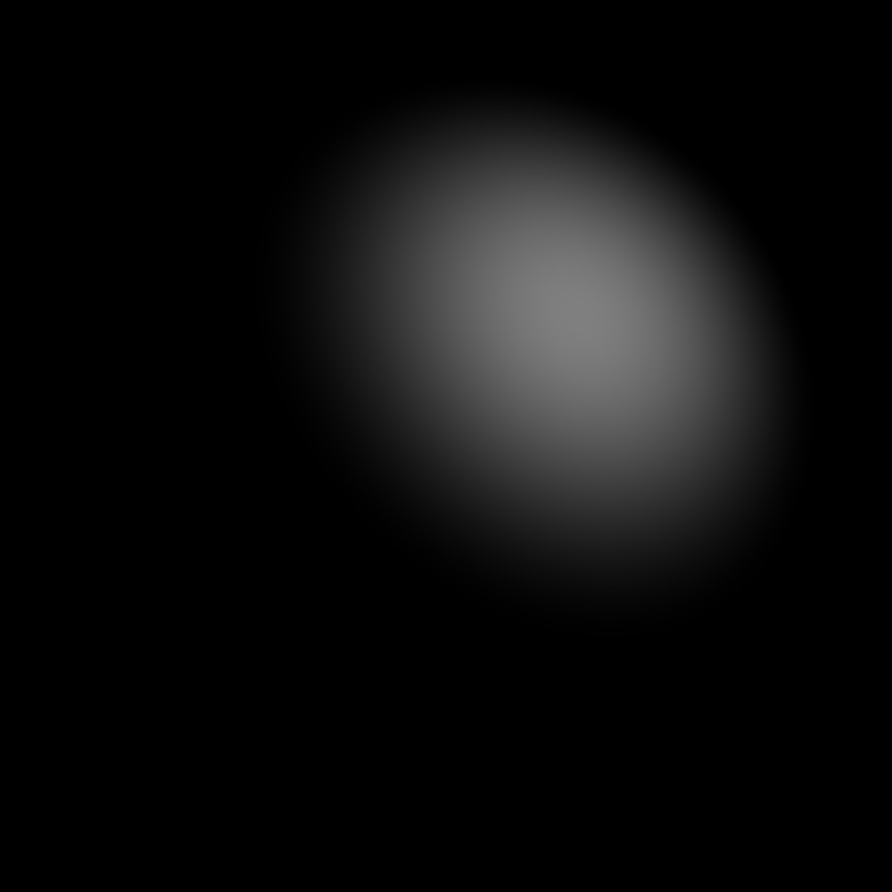

Diffuse only shading from a single light source
[Directional Light]
Command-line invocation: ./as1 -kd .5 .5 .5 -ks 0 0 0 -ka 0 0 0 -sp 2 -dl -1 -1 -1 1 1 1
This image shows a sphere and a single directional light with only the diffuse component
[Point Light]
Command-line invocation: ./as1 -kd .5 .5 .5 -ks 0 0 0 -ka 0 0 0 -sp 2 -pl 1 1 1 1 1 1
This image shows a sphere and a single point light with only the diffuse component
[Back to top]
Specular only shading from a single directional light source

Command-line invocation: ./as1 -ks .5 .5 .5 -kd 0 0 0 -ka 0 0 0 -sp 2 -dl -1 -1 -1 1 1 1
This image shows a sphere and a single directional light with only the specular component
[Back to top]
Specular only shading from a single point light source
Command-line invocation: ./as1 -ks .5 .5 .5 -kd 0 0 0 -ka 0 0 0 -sp 2 -pl 1 1 1 1 1 1
This image shows a sphere and a single directional light with only the specular component
[Back to top]
Combined specular and diffuse shading
[Directional Light]
Command-line invocation: ./as1 -kd .5 .5 .5 -ks .5 .5 .5 -ka 0 0 0 -sp 2 -dl -1 -1 -1 1 1 1
This image shows a sphere and a single directional light with both the diffuse and specular components
[Point Light]
Command-line invocation: ./as1 -kd .5 .5 .5 -ks .5 .5 .5 -ka 0 0 0 -sp 2 -pl 1 1 1 1 1 1
This image shows a sphere and a single point light with both the diffuse and specular components
[Back to top]
Anisotropic specularity
Command-line invocation: ./as1 -kd .5 .5 .5 -ks .5 .5 .5 -ka 0 0 0 -sp 2 -dl -1 -1 -1 1 1 1 -pl 1 0 1 1 0 0 -spu 100 -spv 10
This image shows a sphere with anisotropic shading with u greater than v
Command-line invocation: ./as1 -kd .5 .5 .5 -ks .5 .5 .5 -ka 0 0 0 -sp 2 -dl -1 -1 -1 1 1 1 -pl 1 0 1 1 0 0 -spu 10 -spv 100
This image shows a sphere with anisotropic shading with v greater than u
[Back to top]
Multiple light sources
Command-line invocation: ./as1 -kd .5 .5 .5 -ks .5 .5 .5 -ka 0 0 0 -sp 2 -dl -1 -1 -1 1 1 1 -pl 1 0 1 1 0 0
This image shows a sphere with a single white directional light in the (-1, -1, -1) direction and a single red point light at (1, 0, 1)
[Back to top]
Cursor Light
Command-line invocation: ./as1 -kd .5 .5 .5 -ks .5 .5 .5 -ka 0 0 0 -sp 2 -cl 0 1 1
This video shows a feature in which the cursor acts as a point light. As we move the cursor, we can see the shading effect of the point light from various locations.
[Back to top]
Cursor Click
Command-line invocation: ./as1 -kd .5 .5 .5 -ks .5 .5 .5 -ka .1 .1 .1 -sp 2 -dl -1 -1 -1 1 1 1 -cc
This video shows a feature where each time we click the cursor, we place a randomly colored point light.
[Back to top]
Show Lights
Command-line invocation: ./as1 -kd .2 .2 .2 -ks .2 .2 .2 -ka 0 0 0 -sp 2 -dl -1 -1 -1 1 1 1 -sl -cl 0 1 1 -cc
This video shows a feature that allows us to see where each point light is. Each point light that is within the frame is represented as a dot, which has the color of whatever the light source's color is.
[Back to top]
Multiple Spheres
Command-line invocation: ./as1 -kd .5 .5 .5 -ks .5 .5 .5 -ka 0 0 0 -sp 2 -dl -1 -1 -1 1 1 1 -pl 0 0 0 0 1 1 -s -0.5 .5 0 .2 -s -.5 -.5 0 .2 -s .5 .5 0 .2 -s .5 -.5 0 .2
This image shows the capability of having multiple spheres that can interact with the lights.
[Back to top]
Toon Shading
Command-line invocation: ./as1 -kd .5 .5 .5 -ks .5 .5 .5 -ka 0 0 0 -sp 2 -dl -1 -1 -1 1 1 1 -pl 1 0 1 1 0 0 -ts
This image shows a version of toon shading.
[Back to top]
Twinkling
Command-line invocation: ./as1 -kd .3 .3 .3 -ks .3 .3 .3 -ka 0 0 0 -sp 2 -dl -1 -1 -1 1 1 1 -cc -sl -tw -cl 0 1 1
This video shows a twinkling lights, which is a feature that, if turned on, will make it so that all lights generated from cursor clicks will twinkle and change colors periodically.
[Back to top]
Rotations
Command-line invocation: ./as1 -kd .5 .5 .5 -ks .5 .5 .5 -ka 0 0 0 -sp 2 -dl -1 -1 -1 1 1 1 -s -.5 0 0 .2 -s -0.3 0.3 0 .1 -r -sl -cl 1 0 1
This video shows rotations. When this feature is turned on, all the spheres will rotate counterclockwise around the middle point of the screen.
[Back to top]
Tetrahedron
Command-line invocation: ./as1 -kd .5 .5 .5 -ks .5 .5 .5 -sp 2 -ka 0 0 0 -pl .9 .9 .9 1 0 0 -sl -cl 0 0 0 -spu 10 -spv 10 -pl -9 0 .9 0 1 1 -pl 0 -.9 0 0 .5 0 -tet .4 -.4 3 -.7 -.7 .7 -.6 .6 .7 -s -.5 -.5 0 .3
This image shows a feature we added that allows us to also have tetrahedrons with shading in addition to the spheres we already have.
[Back to top]
Ashikhmin-Shirley
Command-line invocation: ./as1 -kd .5 .5 .5 -ks .5 .5 .5 -ka 0 0 0 -sp 2 -pl 1.1 0 1 1 0 0 -spu 10 -spv 20 -sl -asm -pl -2 1 3 0 1 1
This image shows an example of Ashikhmin-Shirley.
[Back to top]
Rotations, Toon Shading, and Multiple Spheres!
Command-line invocation: ./as1 -kd .5 .5 .5 -ks .5 .5 .5 -ka 0 0 0 -sp 2 -dl -1 -1 -1 1 1 1 -pl 0 0 0 0 1 1 -s -0.5 .5 0 .2 -s -.5 -.5 0 .2 -s .5 .5 0 .2 -s .5 -.5 0 .2 -r -ts
A cool combination of our features!
[Back to top]